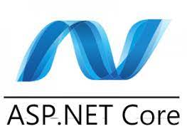

ASP.NET Core es un framework web gratis de código abierto y con un mayor rendimiento que ASP.NET,
desarrollado por Microsoft
y la comunidad. Es un framework modular que se ejecuta completo tanto en el .NET Framework de
Windows como en multiplataforma.
.NET Core. Sin embargo ASP.NET versión Core 3 sólo funciona en .NET Core dejando el soporte de .NET
Framework.
El framework se reescribió por completo unificando aquello anteriormente separado ASP.NET MVC y
ASP.Web NET API a un modelo de
programación único. Originalmente considerado ASP.NET vNext, el framework se iba a llamar ASP.NET 5
cuando estuviera listo.
Pero para evitar que se considerara como una actualización del ya existente framework de ASP.NET,
Microsoft más tarde cambió
el nombre a ASP.Core en la liberación 1.0.6
Curiosidad
Está programado C#

Un logo de ASP.NET CORE
ASP.NET
ASP.NET es un entorno para aplicaciones web desarrollado y comercializado por Microsoft. Los
programadores o también
diseñadores pueden utilizar este framework para construir sitios web dinámicos, aplicaciones web y
servicios web.1
Apareció en enero de 2002 con la versión 1.0 del .NET Framework, y es la tecnología sucesora de la
tecnología Active Server
Pages (ASP). ASP.NET está construido sobre el Common Language Runtime, permitiendo a los
programadores escribir código
ASP.NET usando cualquier lenguaje admitido por el .NET Framework.
Historia
Microsoft introdujo la tecnología llamada Active Server Pages en diciembre de 1996. Es parte de
Internet
Information Services (IIS) desde la versión 3.0 y es una tecnología de páginas activas que permite
el uso de
diferentes scripts y componentes en conjunto con el tradicional HTML para mostrar páginas generadas
dinámicamente.
La definición contextual de Microsoft es que "Las Active Server Pages son un ambiente de aplicación
abierto y gratuito
en el que se puede combinar código HTML, scripts y componentes ActiveX del servidor para crear
soluciones dinámicas
y poderosas para la web".
Después del lanzamiento del Internet Information Services 4.0 en 1997, Microsoft comenzó a
investigar las posibilidades
para un nuevo modelo de aplicaciones web que pudiera resolver las quejas comunes sobre ASP,
especialmente aquellas con
respecto a la separación de la presentación y el contenido y ser capaz de escribir código
"limpio".2 A Mark Anders, un
administrador del equipo de IIS y Scott Guthrie, quien se había unido a Microsoft en 1997 después de
graduarse de la
Universidad Duke, se les dio la tarea de determinar cómo debería ser ese modelo. El diseño inicial
fue desarrollado en
el curso de dos meses por Anders y Guthrie, y Guthrie codificó los prototipos iniciales durante las
celebraciones
navideñas de 1997.3
El desarrollo inicial de XSP fue hecho usando Java,4 pero pronto se decidió construir una nueva
plataforma sobre el
Common Language Runtime (CLR), pues ofrecía un ambiente orientado a objetos, recolección de basura y
otras características
que fueron vistas como características deseables. Guthrie describió esta decisión como un "alto
riesgo", pues el éxito de
su nueva plataforma de desarrollo web estaría atado al éxito del CLR, que, como XSP, aún estaba en
etapas tempranas de
desarrollo, tanto así que el equipo XSP fue el primer equipo en Microsoft en enfocarse en el CLR.
Con el cambio al Common Language Runtime, XSP fue implementado en C# (conocido internamente como
"Project Cool" pero mantenido
en secreto para el público), y fue renombrado a ASP+, en este punto la nueva plataforma fue vista
como el sucesor de Active Server
Pages, y la intención fue proporcionar un medio fácil de migración para los desarrolladores ASP.5
La primera demostración pública y la liberación de la primera beta de ASP+ (y el resto del .NET
Framework) se realizó en el
Microsoft's Professional Developers Conference (PDC) el 11 de julio de 2000 en Orlando. Durante la
presentación de Bill Gates,
Fujitsu demostró ASP+ usado en conjunción con COBOL,6 y el soporte para una variedad de otros
lenguajes fue anunciada,
incluyendo los nuevos lenguajes de Microsoft, Visual Basic .NET y C#, así como también el soporte
por medio de herramientas
de interoperabilidad para Python y Perl creadas por la empresa canadiense ActiveState.7